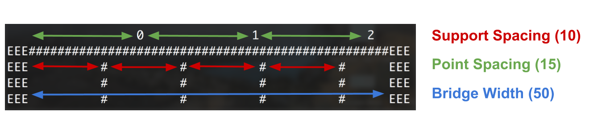

By the time you start this full PA, you should have already completed the two short PAs. You should reference or even re-use some of that code to work on this!
Your program should take 4 inputs. The input prompts, along with sample input values, are shown below:
Bridge length:
50
Spacing between supports:
10
Spacing between points to measure deflection at:
15
Weight:
1000
The length of the bridge represents the length of the span of the bridge in meters. The second input is the spacing between the bridge supports, in meters. The third input is the spacing between the points along the bridge to measure deflection at. You will be required to calculate the deflection at each of these points. Finally, the last input is the weight to use for the deflection calculation.
Given the 4 inputs shown in the previous section, the output of the program run should look like so:
Bridge length:
50
Spacing between supports:
10
Spacing between points to measure deflection at:
14
Weight:
1000
0 1 2
EEE##################################################EEE
EEE # # # # EEE
EEE # # # # EEE
EEE # # # # EEE
DEFLECTIONS:
point 0 = 0.1873
point 1 = 0.15714
point 2 = 0.05873
The top part of the output is a text representation of the bridge.
Each end of the bridge is represented with E characters and a #.
The bridge itself is represented with #.
The supports are also shown, at intervals that correspond to the spacing between supports input.
At the top of the bridge, various points are annontaed with numbers.
These are the points on the bridge that you should calculate the deflection at.
These points are controlled by the fourth input.
The diagram below shows the parts of the bridge and labels that are controlled by 3 of the 4 inputs:

Given this bridge, let’s go over how the deflections will be calculated.
Point 0 is between the first and second interior supports on the bridge.
It is four dashes (meters) away from the left support and 5 dashes away from the right.
Thus, the distance 4 should be plugged into the formula.
The provided force (weight) was 1000 Newtons.
Going through the steps:
You should do this calculation for each of the points along the bridge.
Here’s how we recommend working on this program.
Submit bridge_deflection.py to gradescope by February 5, 2019 at 7pm.
You should do your best to make sure that all of the test cases pass.